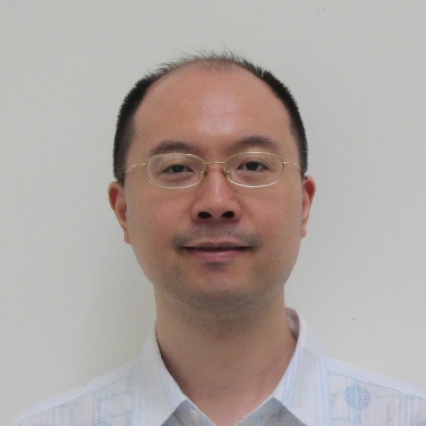

Yang Shen[ Home | Research | Publications | CAPRI | CV | Links ] |
|||
|
E-mail: YShen <AT> tamu.edu |
 |
|
|
|
|
|||
|
News Recruiting postdocs and data scientists for multimodal machine learning with applications to protein sequence-structure-function modeling, drug discovery, systems biology, omics, and knowledge graphs. Please see a recent ad here. Recruiting excellent Ph.D. students all the time! (CS/OR/Engineering (Algorithms)/Applied Maths/Bioinformatics/Computational Biology/Computational Biophysics/Computational Chemistry/... all welcome!). Please see a recent ad here. Check out a video about our research, Purdue '21 Talk, ISMB'20 Talk, ISMB'19 talk. Teaching: ECEN 766: Algorithms in Structural Bioinformatics (Spring 2022 Flyer and Spring 2024 syllabus; Final Project 2024 Guidelines and Project Lists). Teaching: ECEN 303 Syllabus (Fall 2023) and ECEN 314 Syllabus (Fall 2021)
I was organizing ECEN Bio-Group Seminar (2019-20). Current/Prospective EE(Bio/ISLS)/CS/CE students seeking mentored and funded research opportunities: please feel free to email with CV, transcript, and a brief research statement.
Selected publications in 2025: iScience , Protein Science
Selected publications in 2024: ICLR , Human Genetics , NeurIPS
Selected publications in 2023: ICLR , Bioinformatics , JCI
Selected publications in 2022: WSDM , ICLR , Bioinformatics , NeurIPS
Selected publications in 2021: JCIM , Bioinformatics , ICML-1 , ICML-2
Selected publications in 2020: JCTC , Proteins , Bioinformatics , CVPR , ICML , NeurIPS , JCIM
12/2025 Congratulations to our students on presenting their works at NeurIPS and CAGI!
11/2025 Congratulations to Rujie on passing the Ph.D. defense!
04/2025 Congratulations to Yuning on receiving the 2025 Association of Former Students Distinguished Graduate Student Award - Excellence in Research. See news. Yuning is our 5th Ph.D. graduate and 2nd recipient of this highest TAMU recognition to graduate students, after Mostafa who received the same recognition in 2021.
12/2024 Congratulations to Shaowen on passing the Ph.D. defense! A great Ph.D. journey dedicated to generative protein design.
10/2024 Congratulations to Qiang on passing the Ph.D. defense and bringing his data science expertise to finance!
06/2024 Congratulations to Yuning on passing the Ph.D. defense! TAMU Ph.D. ... Caltech Postdoc ... CUHK-SZ Faculty
05/2024 Congratulations to Shreeman who graduated with a B.S. in Computer Engineering! As an undegraduate research scholar, Shreeman completed a thesis "Molecular Discovery Chatbot".
10/2023 Congratulations to Yuanfei on passing the Ph.D. defense!
08/2023 Yang gave two talks on protein docking and chemical discovery at the American Chemical Society 2023 Fall National Meeting.
06/2023 Congratulations to Wuwei on passing the Ph.D. defense!
04/2023 Congratulations to Yuning who received a Quality Graduate Student Award from the Department of Electrical and Computer Engineering!
11/2022 Congrats to Yuanfei and Wuwei for their posters accepted to the Biophysical Society Annual Conference. Yuanfei was also selected for a travel award.
10/2022 Congrats to Arghamitra, Yuning, Rujie, and Yuanfei whose paper on multi-modal and multi-task learning for protein-protein interactions was accepted to MLSB @ NeurIPS.
10/2022 We welcome Dr. Jiwoong Park to join us with great expertise in graph learning and great interest in molecular discovery.
09/2022 Yang presented cross-modality and self-supervised protein embedding at ECCB, which is now published in Bioinformatics.
08/2022 Congratulations to Arghamitra who received a CSGrad4US Fellowship from the National Science Foundation!
06/2022 We welcome new Ph.D. student Shuying Zhu who joined us with a department merit fellowship.
06/2022 Yang attended an NSF-funded Network Biology Workshop at Notre Dame.
12/2021 Yang is thankful to be a co-recipient of the 2021 ECE Outstanding Faculty Award.
10/2021 Congratulations to Yue who passed the Ph.D. defense!
09/2021 Congratulations to Yuning who received a Chevron Scholarship from the Department of Electrical and Computer Engineering!
06/2021 Welcome, Andrew and Nithin, to join us for a summer of full-time mentored research under the USRG (Undergraduate Summer Research Grant) Program!
05/2021 Congratulations to Yuning and Yue on their two papers accepted to ICML'2021 (graph contrastive learning automated and joint text-image embedding-based generative protein design)! Congratulations to Yuning on his paper accepted as a long talk (3% acceptance rate)!
05/2021 Congratulations to Arghamitra and Maxwell for accomplishing their Undergraduate Research Scholars Theses after > two semesters of excellent work! Check out their project presentations: video 1 and video 2.
04/2021 Mostafa has been selected for a 2021 Association of Former Students Distinguished Graduate Student Award for Excellence in Research - Doctoral, one of the Texas A&M’s highest levels of recognition. (News 1 and 2 ). Congratulations, Mostafa!
12/2020 Our paper on guided conditional Wasserstein GAN for de novo protein design was featured on the cover of JCIM.
08/2020 Mostafa defended his Ph.D. thesis -- the first Ph.D. graduate from our group, Whoop! -- and will start his career with Microsoft. Congrats and best wishes!
06/2020 Di finished his chapter at TAMU with us (first M.S. then research associate) and will start his Ph.D. program at Penn. Congrats and best wishes!
05/2020 Fangtong graduated with M.S. and will start her Ph.D. program at NCSU. Congrats and best wishes!
02--05/2020 Congrats to Yuning's first and second papers (CVPR and ICML) here. Way to go!
03/2020 Yang attended an NSF-funded Cell Modeling Hackathon in San Francisco.
01/2020 Yang is thankful to receive a CAREER Award from NSF.
12/2019 Five of us attended the CAGI* Workshop in San Francisco. Yue was invited for a flash talk. Mostafa and Yue both received NIH-funded travel fellowships to present their latest work in posters.
09/2019 Our work "Learning to optimize in swarms" is accepted to NeurIPS 2019. (Update: Nov. 2019)
08/2019 Vishnu completed his 10-week program with us as an undergraduate research intern. Next stop ... Grad Program ... Good luck!
07/2019 Yang gave a talk "Bayesian Active Learning for Optimization and Uncertainty Quantification in Protein Docking" at ISMB 2019. Video
05/2019 Our paper "Genomic and Molecular Landscape of DNA Damage Repair Deficiency across The Cancer Genome Atlas" was selected among the Best of 2018 by Cell Reports. 05/2019 A group of our graduate and undergraduate students published in Human Mutation: "Predicting Pathogenicity of Missense Variants with Weakly Supervised Regression". Congratulations to all! 04/2019 Yang gave an invited talk "Bayesian Active Learning for Optimization and Uncertainty Quantification in Protein Docking" at the 7th CAPRI Meeting. He also gave a talk on "Interpretable Deep Learning for Compound-Protein Affinity Prediction" at the University of Cambridge.
04/2019 Our collaboration with the Ward and Ober Lab on pH-specific antibody-drug conjugate published in Nature Biotechnology. TAMU Research Bulletin.
02/2019 Mostafa and Di's DeepAffinity was published in Bioinformatics: "DeepAffinity: interpretable deep learning of compound–protein affinity through unified recurrent and convolutional neural networks" (code). Congratulations! 12/2018 Di has defended his M.S. thesis.
08/2018 Haoran and Tianliang have received their Master's degrees and Seyi has completed his USRG program. Congratulations!
06/2018 Mostafa's paper on exact combinatorial optimization for multistate protein design is accepted to ECCB and will appear in Bioinformatics. Congratulations, Mostafa!
05/2018 Shen lab graduates the first M.S. student. Congratulations to Yi!
03/2018 Call for papers: 3rd BOOM - Joint AAMAS-ICML-IJCAI Workshop EasyChair CFP.
09/2017 Thankful to receive a MIRA Award from NIGMS of NIH. TAMU ECE News.
06/2017 Invited talk at the 18th Yale Workshop on Adaptive and Learning Systems.
12/2016 Tied the 3rd (with Kihara and Seok) among 48 groups in The Second CASP-CAPRI. (source: Marc Lensink's latest CASP12-CAPRI paper in Proteins) 11/2016 Haoran and Yuanfei published their first paper on Proteins, titled "Predicting Protein Conformational Changes for Unbound and Homology Docking: Learning from Intrinsic and Induced Flexibility". Congratulations, Haoran and Yuanfei! 10/2016 Invited talk at MPI 2016 titled "Predicting protein conformational changes upon binding and mutation".
08/2016 Mostafa was selected to receive an NSF Award for Young Professionals Contributing to Smart and Connected Health and invited to give a lightning talk at IEEE EMBC 2016. Congratulations, Mostafa!
04/2016 Selected and invited talk at the 6th CAPRI Evaluation Meeting titled "Modeling protein conformational changes during protein interactions with cNMA – encounter complex-based Normal Mode Analysis".
01/2016 CALL FOR PAPERS: First International Workshop on Biomedical Informatics with Optimization and Machine Learning (BOOM2016; in conjunction with IJCAI) and EURASIP Journal on Bioinformatics and System Biology: Special Issue on Biomedical Informatics with Optimization and Machine Learning. Update(10/2016): The special issue is now released and being updated. 06/2015 "cNMA: A Framework of Encounter Complex-based Normal Mode Analysis to Model Conformational Changes in Protein Interactions" published in Bioinformatics.
01/2015
Ranked 4th among 29 groups for performances predicting 25 oligomeric protein structures in CAPRI Round 30. See an official summary (page 72). 01/2015 Assistant professor at TAMU. 11/2014 "Molecular Mechanisms and Design Principles for Promiscuous Inhibitors to Avoid Drug Resistance: Lessons Learned from HIV-1 Protease Inhibition" published in PROTEINS.
11/2013 "ESR1 Ligand-binding Domain Mutations in Hormone-resistant Breast Cancer" published in Nature Genetics. (Highlighted in Nature Reviews Clinical Oncology and Nature Reviews Cancer.)
10/2013 Dr. Tomasz Oliwa joins as a postdoctoral scholar. Welcome, Tomasz!
10/2013 "Improved Flexible Refinement of Protein Docking in CAPRI Rounds 22–27" published in PROTEINS.
09/2013 "Testing the Substrate-Envelope Hypothesis with Designed Pairs of Compounds" published in ACS Chemical Biology.
05/2013 Antiandrogen paper highlighted in Nature Reviews Cancer and Science-Business eXchange (Cover Story).
04/2013 Selected talk at the 5th CAPRI Evaluation Meeting, titled "Improved flexible refinement of protein docking in CAPRI rounds 22–27".
04/2013 Invited talk at the 245th ACS, titled "Designing and unraveling promiscuous inhibitors against drug-resistant target mutations".
04/2013 "Overcoming Mutation-Based Resistance to Antiandrogens with Rational Drug Design" published in eLife. (Editor's Choice, eLife Insight)
02/2013 Awarded 2M CPU hours in total (2012-13) at Argonne Leadership Computing Facility.
11/2012 "Charge Optimization Theory for Induced-Fit Ligands" published in JCTC. 06/2012
Visiting assistant professor at MIT.
01/2012
Best performance in CAPRI Round 26 (1st out of 42 worldwide teams). 01/2012 Started the appointment of research assistant professor at TTI-C. 07/2011 Produced one fair and two medium predictions
for three protein–protein targets and ranked No. 2 among 37 worldwide
teams in CAPRI Round 23. 03/2011 Oral presentation at the 241st
American Chemical Society (ACS) National Meeting. Yang Shen is an associate professor in the Department of Electrical and Computer Engineering at Texas A&M University. He is also affiliated with the Department of Computer Science and Engineering and the Institute of Biosciences and Technology. He received his B.E.
in Automatic Control
from the University of Science and Technology of
China in 2002 and his
Ph.D. in
Systems Engineering from Boston University in
2008. In 2008–2011 he had been a
postdoctoral associate with Bruce Tidor in
the Department of
Biological Engineering and the Computer Science & Artificial
Intelligence Laboratory (CSAIL) at
Massachusetts Institute of Technology where he remains a research affiliate. In 2012–2014 he had been a research assistant professor at Toyota Technological
Institute at
Chicago, a philanthropically endowed academic computer science
institute with a close affiliation with the University of Chicago. His research
interests are in modeling, simulating,
and engineering of biomolecules and biomolecular networks, with the goal of probing
molecular mechanisms and
modulating emergent behavior. Specific
topics include protein docking, protein engineering, drug
design, systems and
synthetic biology, and bioinformatics. Central
to these ends are the development and application of computational
methods in molecular
modeling, network simulation, optimization, machine learning, graph
theory, and
system and control theory. |
|||